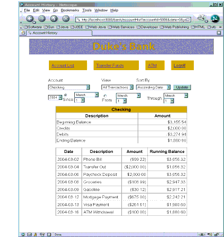
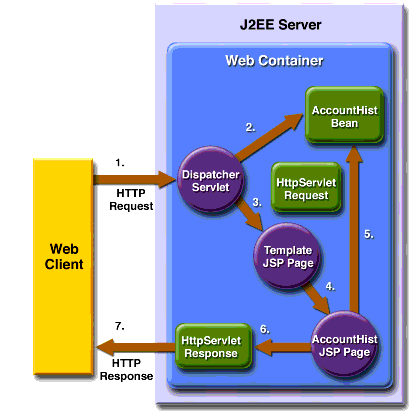

Web Client
In the Duke's Bank application, the web client is used by customers to access account information and perform operations on accounts. Table 36-2 lists the functions the client supports, the URLs used to access the functions, and the components that implement the functions. Figure 36-6 shows an account history screen.
Note: The source code for the web client is in the
<INSTALL>/j2eetutorial14/examples/bank/src/com/sun/ebank/web/and<INSTALL>/j2eetutorial14/examples/bank/web/directories.

Design Strategies
The main job of the JSP pages in the Duke's Bank application is presentation. To achieve this, most dynamic processing tasks are delegated to enterprise beans, custom tags, and JavaBeans components.
In the Duke's Bank application, the JSP pages use enterprise beans to handle interactions with the database and rely on JavaBeans components for interactions with the enterprise beans. In the Duke's Bookstore application, discussed in Chapters 11 to 22, the
BookDBJavaBeans component acts as a front end to a database. In the Duke's Bank application,TransferBeanacts as a facade to theTxControllerBeanenterprise bean. However, the other JavaBeans components have much richer functionality.ATMBeaninvokes enterprise bean methods and sets acknowledgment strings according to customer input, andAccountHistoryBeanmassages the data returned from the enterprise beans in order to present the view of the data required by the customer.The web client uses a template mechanism implemented by custom tags (discussed in A Template Tag Library) to maintain a common look across all the JSP pages. The template mechanism consists of three components:
template.jspdetermines the structure of each screen. It uses theinserttag to compose a screen from subcomponents.screendefinitions.jspfdefines the subcomponents used by each screen. All screens have the same banner, but different title and body content (specified in the JSP Pages column in Table 36-2).Dispatcher, a servlet, processes requests and forwards them totemplate.jsp.Finally, the web client uses logic tags from the JSTL
coretag library to perform flow control and tags from the JSTLfmttag library to localize messages and format currency.Client Components
All the JavaBeans components used in the web client are instantiated by
Dispatcher. TheBeanManagerandCustomerBeancomponents are instantiated for the session and request, respectively. The other beans--AccountHistoryBean,TransferBean, andATMBean--are instantiated depending on which request URL is being handled.Responsibility for managing the enterprise beans used by the web client rests with the
BeanManager. It creates customer, account, and transaction controller enterprise beans and provides methods for retrieving the beans.When instantiated by
Dispatcher, theBeanManagercomponent retrieves the home interface for each bean from the helper classEJBGetterand creates an instance by calling thecreatemethod of the home interface. Because these enterprise beans apply to a particular customer or session,Dispatcherstores aBeanManageras a session attribute.public class BeanManager { private CustomerController custctl; private AccountController acctctl; private TxController txctl; public BeanManager() { if (custctl == null) { try { CustomerControllerHome home = EJBGetter.getCustomerControllerHome(); custctl = home.create(); } catch (RemoteException ex) { Debug.print("Couldn't create customer bean." + ex.getMessage()); } catch (CreateException ex) { Debug.print("Couldn't create customer bean." + ex.getMessage()); } catch (NamingException ex) { Debug.print("Unable to look up home: " + CodedNames.CUSTOMER_CONTROLLER_EJBHOME + ex.getMessage()); } } public CustomerController getCustomerController() { return custctl; } ... }
CustomerBeanmaintains the customer and account information for the current request. Although the customer is the same for each request, the account may change, soDispatcherstores aCustomerBeanas a request attribute.public class CustomerBean { private BeanManager beanManager; private String customer; private String account; public AccountDetails getAccountDetails() { AccountDetails ad = null; try { ad = beanManager.getAccountController(). getDetails(this.account); } catch (InvalidParameterException e) { ... return ad; } public ArrayList getAccounts() { ArrayList accounts = null; try { accounts = beanManager.getAccountController(). getAccountsOfCustomer(this.customer); } catch (InvalidParameterException e) { ... } return accounts; }The page fragment
template/links.jspgenerates the list of bank function links at the top of every page. Notice that the customer is retrieved from theuserPrincipalobject, which is set when the customer logs in (see Protecting the Web Client Resources). After the customer is set, the page can retrieve fromCustomerBeanthe collection of accounts for the customer. The collection is assigned to theaccountsvariable, and the first item in the collection is used as the default account ID for the ATM operation.<%@ taglib uri="http://java.sun.com/jsp/jstl/core" prefix="c" %> <%@ taglib uri="http://java.sun.com/jsp/jstl/fmt" prefix="fmt" %> <jsp:useBean id="customerBean" class="com.sun.ebank.web.CustomerBean" scope="request"/> <jsp:setProperty name="customerBean" property="customer" value="${pageContext.request.userPrincipal.name}"/> <c:set var="accounts" value="${customerBean.accounts}" /> <c:forEach items="${accounts}" begin="0" end="0" var="ad"> <c:set var="accountId" value="${ad.accountId}" /> </c:forEach> <center> <table border=0 cellpadding=10 cellspacing=25 width=600 summary="layout"> <tr> <c:url var="url" value="/accountList" /> <td bgcolor="#CE9A00"><a href="${url}"> <fmt:message key="AccountList"/></a></td> <c:url var="url" value="/transferFunds" /> <td bgcolor="#CE9A00"><a href="${url}"> <fmt:message key="TransferFunds"/></a></td> <c:url var="url" value="/atm?accountId=${accountId}&operation=0" /> <td bgcolor="#CE9A00"><a href="${url}"> <fmt:message key="ATM"/></a></td> <c:url var="url" value="/logoff" /> <td bgcolor="#CE9A00"><a href="${url}"> <fmt:message key="Logoff"/></a></td> </tr> </table> </center>Request Processing
All requests for the URLs listed in Table 36-2 are mapped to the
dispatcherweb component, which is implemented by theDispatcherservlet:public class Dispatcher extends HttpServlet { public void doPost(HttpServletRequest request, HttpServletResponse response) { ... String selectedScreen = request.getServletPath(); ... if (selectedScreen.equals("/accountHist")) { ... } else if (selectedScreen.equals("/transferAck")) { String fromAccountId = request.getParameter("fromAccountId"); String toAccountId = request.getParameter("toAccountId"); if ( (fromAccountId == null) || (toAccountId == null)) { request.setAttribute("errorMessage", messages.getString("AccountError")); try { request.getRequestDispatcher( "/error.jsp").forward(request, response); } catch(Exception ex) { } } else { TransferBean transferBean = new TransferBean(); request.setAttribute("transferBean", transferBean); try { transferBean.setMessages(messages); transferBean.setFromAccountId(fromAccountId); transferBean.setToAccountId(toAccountId); transferBean.setBeanManager(beanManager); transferBean.setTransferAmount(new BigDecimal(request. getParameter("transferAmount"))); String errorMessage = transferBean.doTx(); if (errorMessage != null) { request.setAttribute("errorMessage", errorMessage); try { request.getRequestDispatcher( "/error.jsp").forward(request, response); } catch(Exception ex) { } } } catch (NumberFormatException e) { request.setAttribute("errorMessage", messages.getString("AmountError")); try { request.getRequestDispatcher( "/error.jsp").forward(request, response); } catch(Exception ex) { } } } ... try { request.getRequestDispatcher( "/template/template.jsp").forward(request, response); } catch(Exception e) { } } }When a request is delivered,
Dispatcherdoes the following:
- Retrieves the incoming request URL and extracts the requested screen.
Dispatcherperforms business logic and updates model objects based on the requested screen.- Creates a JavaBeans component and stores the bean as a request attribute.
- Parses and validates the request parameters. If a parameter is invalid,
Dispatchermay reset the request alias to an error page. Otherwise, it initializes the JavaBeans component.- Calls the
doTxmethod of the JavaBeans component. This method retrieves data from the enterprise beans and processes the data according to options specified by the customer.- Forwards the request to
template.jsp.As mentioned earlier,
template.jspgenerates the response by including the responses from subcomponents. The body subcomponent in turn usually retrieves data from the JavaBeans components initialized byDispatcher.Figure 36-7 depicts the interaction among these components.

Figure 36-7 Web Component Interaction
Protecting the Web Client Resources
In the J2EE platform, you protect a web resource from anonymous access by specifying which security roles can access the resource. The web container guarantees that only certain users acting in those roles can access the resource. For the web container to enforce the security constraint, the application must specify a means for users to identify themselves, and the web container must support mapping a role to a user.
In the Duke's Bank web client, you restrict all the URLs listed in Table 36-2 to the security role
bankCustomer. The application requires users to identify themselves via the form-based login mechanism. When a customer tries to access a web client URL and has not been authenticated, the web container displays the JSP pagelogon.jsp. This page contains a form that requires a customer to enter an identifier and password.<form action="j_security_check" method=post> <table> <tr> <td align="center" > <table border="0"> <tr> <td><b><fmt:message key="CustomerId"/></b></td> <td> <input type="text" size="15" name="j_username"> </td> </tr> <tr> <td><b><fmt:message key="Password"/></b></td> <td> <input type="password" size="15" name="j_password"> </td> ... </form>Note that the action invoked by the form,
j_security_check, is specified by the Java Servlet specification, as are the request parametersj_usernameandj_password. The web container retrieves this information, maps it to a security role, and verifies that the role matches that specified in the security constraint. Note that in order for the web container to check the validity of the authentication information and perform the mapping, you must perform these two steps when you deploy the application:After the customer has been authenticated, the identifier provided by the customer is used as a key to identify the customer's accounts. The identifier is retrieved from the request using the following expression:
All of the material in The J2EE(TM) 1.4 Tutorial is copyright-protected and may not be published in other works without express written permission from Sun Microsystems.